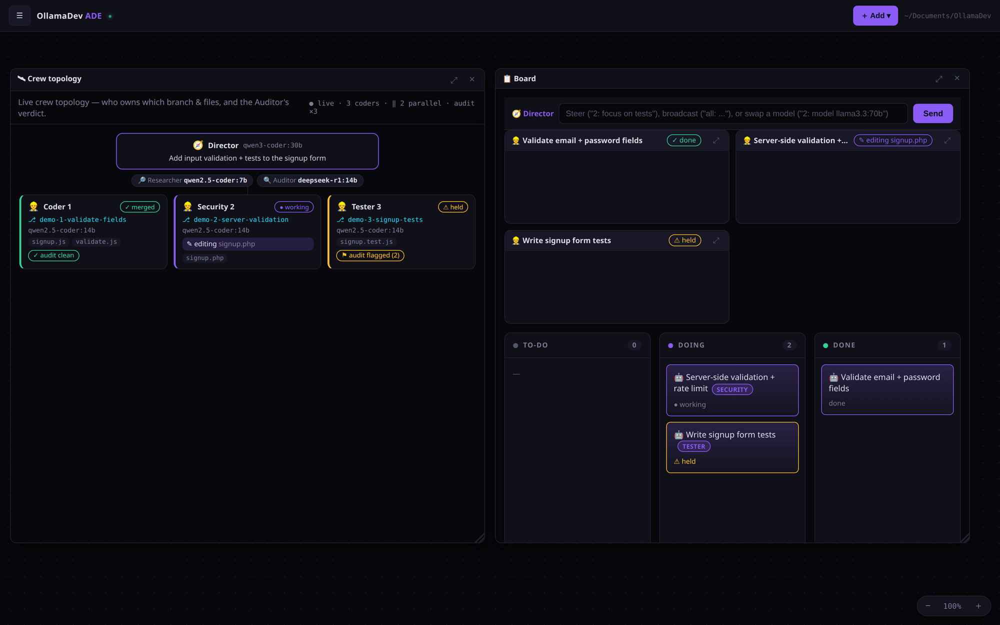

OllamaDev isn't trying to beat hosted coding agents at raw model quality — frontier cloud models will usually write a smarter answer. It competes on the axis those tools structurally cannot: by default your code stays on the machine and costs nothing to run, you can opt into Ollama's cloud models when a task wants more horsepower (still one Ollama backend), and the whole engine is one vanilla file you can read.

The cloud agent-canvases put a team of agents on a board. OllamaDev does the same — a Director, isolated-worktree coders, an Auditor gate, a live topology — except every agent runs through your Ollama: local by default, free, nothing uploaded — with optional cloud models when you want them.
Six things a hosted, cloud-only coding agent can't offer — by design, not by neglect.
Every token is generated by your own model on your hardware. No prompt, no file, no diff is ever uploaded — so there's nothing to leak, cache, subpoena, or train on.
No subscription, no per-token meter, no surprise bill at the end of a long session. Run the biggest model your GPU (or CPU) can handle, as much as you want.
Your own Ollama models by default — or opt into Ollama's hosted cloud models through the same daemon (still one backend, same -m <tag>, even in the crew). A 🌐 Web toggle (or --no-web) blocks the agent's network tools when you'd rather stay offline.
One vanilla-PHP binary built by concatenation — no Composer, no npm, no framework, no closed cloud service. You can read the entire engine. GPL-3.0, no telemetry, ever.
A Director splits your task across isolated git worktrees, each coder builds on its own branch, an Auditor reviews every diff, and only clean work merges. Multi-agent throughput — local or cloud — with no per-agent meter running.
Light by default: a smaller context, the model unloads when idle, and crew coders run one at a time — so a local run won't peg your GPU or freeze the box. Flip to --full (or OLLAMADEV_POWER=full) when you want it wide open. Cloud runs are never throttled.
The honest scorecard — including the rows where hosted tools come out ahead.
| Dimension | OllamaDev | Hosted / cloud agents |
|---|---|---|
| AI provider | Local (your Ollama models) | Hosted, cloud-only |
| Privacy | 100% on-device | Code sent to servers |
| Cost | Free | Subscription / per-token |
| Cloud models | Optional (Ollama cloud, opt-in) | Required |
| Source auditability | Full — one vanilla file, GPL-3.0 | Closed |
| Multi-agent crew | Yes — parallel, per-role models, worktrees | Varies |
| Measurable quality (evals) | ollamadev eval — pass rate on a fixed suite | Rarely exposed to you |
| Diff-preview + undo | Yes | Partial |
| Semantic code search | Local embeddings | Cloud-indexed |
| Dependencies | None (vanilla PHP) | Editor / Node stack |
| Surfaces | CLI · desktop · web — one shared engine | Editor plugin / web |
| Raw model quality | Bounded by local hardware | Frontier hosted models ✓ |
| UX polish / ecosystem | Lean | Larger, more integrations ✓ |
The last two rows go to hosted tools — and that's the point: pick OllamaDev when privacy, cost, and control matter more than squeezing out the smartest possible single answer.
The cloud multi-agent environments OllamaDev's ADE is modeled against.
| OllamaDev | Cloud canvas A | Cloud canvas B | Cloud canvas C | |
|---|---|---|---|---|
| Models | Local Ollama (+ optional cloud) | cloud | cloud | cloud + local |
| Runs locally by default | Yes (cloud opt-in) | No | No | optional |
| Cost | Free | paid | paid | $19–59/mo |
| Surfaces | CLI · desktop · web | macOS app | desktop | Electron |
| Infinite agent canvas | Yes | Yes | — | — |
| Worktree-per-agent + Auditor gate | Yes | — | partial | Yes |
| Live agent topology | Yes | activity feed | — | Yes |
| Voice-driven crew | Yes | Yes | — | — |
Graph memory ([[links]]) | Yes | — | Yes | — |
You give up frontier-model horsepower; you get a private, free, cross-platform crew that runs entirely on your machine.
No spin. If these matter most to you, a cloud agent may be the better pick.
Frontier hosted models are simply stronger than what most people can run locally. OllamaDev narrows the gap with curated model presets, a tool-calling fallback chain, and a verify loop — but it can't out-think a bigger model.
Commercial tools have bigger teams, deeper editor integration, and marketplaces. OllamaDev is lean and vanilla by choice — fewer moving parts, but fewer bells.
A hosted agent works the moment you sign in. OllamaDev needs PHP and a local model pulled first — a few minutes, in exchange for owning the whole stack.
Want the numbers for your setup? Run ollamadev eval to measure the agent's pass rate with your model on your hardware — then decide.